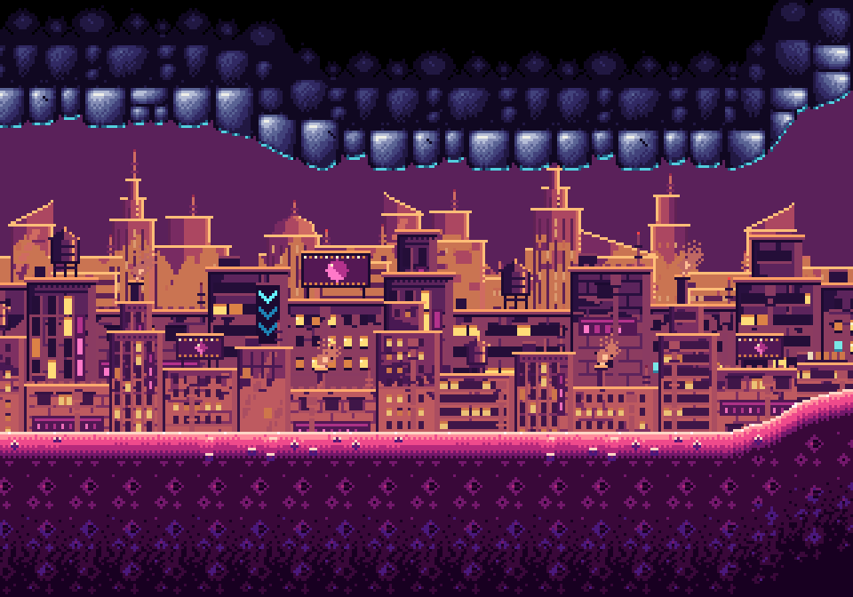
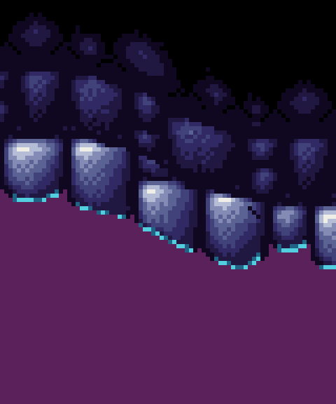
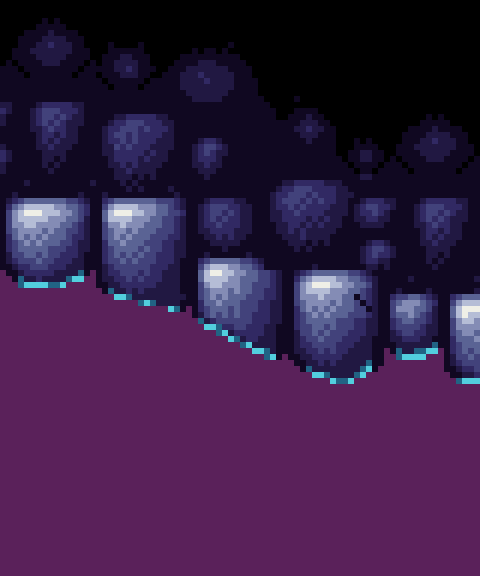
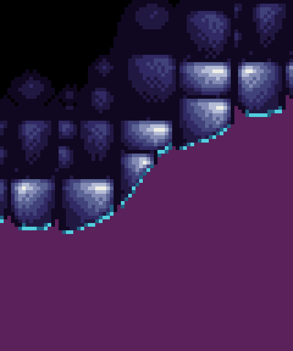
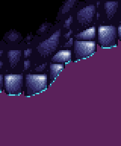
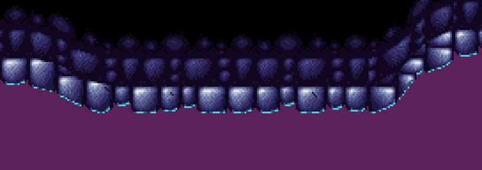
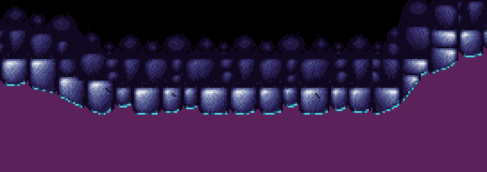
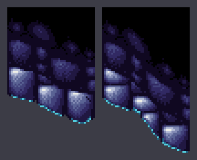
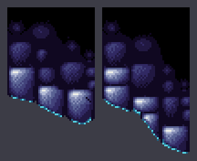

One variant. Before = owner-picked smooth fade (boulders sheared along the slope). After = every boulder typed upright by hand, placed lower or higher along the slope; lit rim boulders of the curve piece restored whole. Same 18 roof tiles (R0 to R17), same palette, same lookup.










